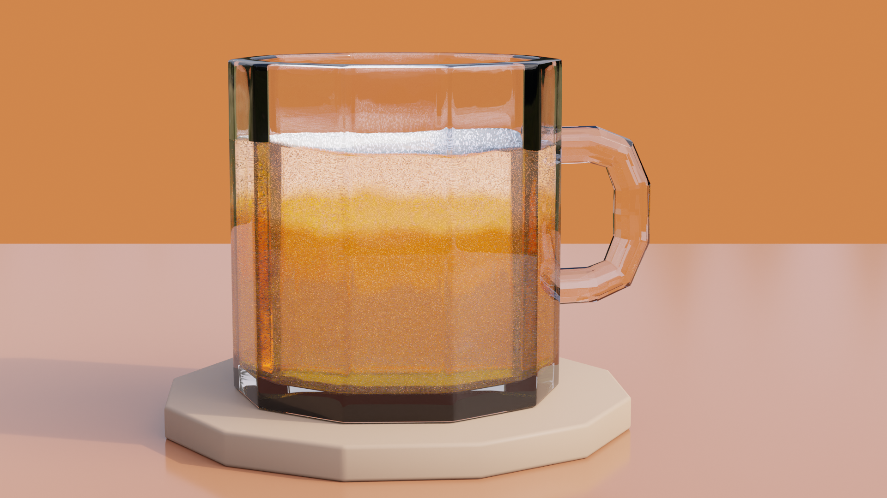
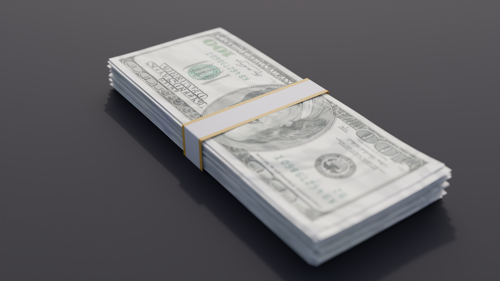

Artwork
All artworks may be used for free projects, so long as you credit me somewhere.

This is a 3d render of a very hoppy beer.

This is a nice background I made that works well with a simple desktop theme.

This is a structed dark themed background, consisting of randomly extruded hexagons. It brings chaos and order together in a please way.

This is a stock image I made of cash, without the watermark. Feel free to use. Credit goes to CGMatter for the tutorial.

Another stock image of an Iphone 12, again without a watermark. Feel free to use in any way, just make sure to credit me somewhere.

This is a image from the greatest movie of all time, "The Truman Show". This is a 3d remake of the final scene where he escapes into the real world through a door in the dome where he was raised from a child.